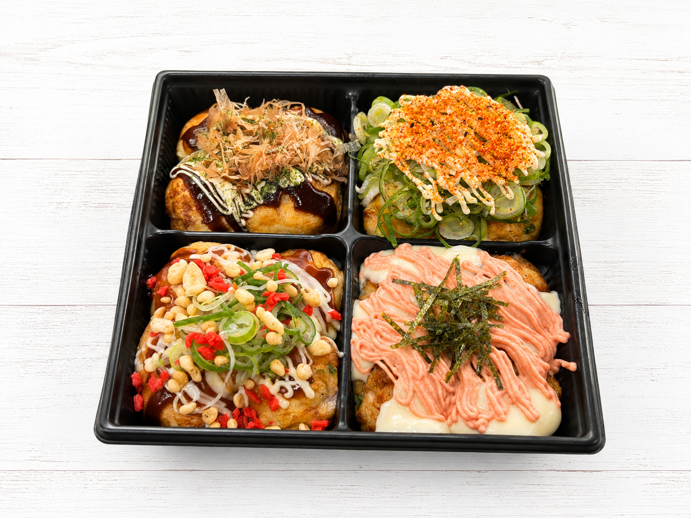
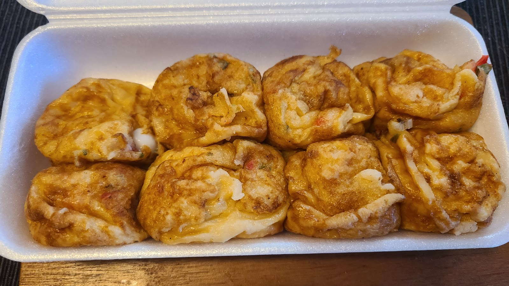

大阪仕込みのふわとろ魂、野田の夜を熱くする屋台の灯り。
茨城県守谷市で愛される「はげたこ」の2号店が、2025年6月2日、千葉県野田市に開店しました。本場大阪の味を、まっすぐ野田の皆さまへ。
© Google投稿者: yaya
選ばれる3つの理由
焼き上がりを待つ時間も、おもてなし
ふわとろのたこ焼きが焼き上がるまでは15〜20分ほど。その間、お待たせするだけでは終わりません。無料の卵スープをお出しし、ご一緒の人数まで気にかけながらお迎えします。焼き上がりは呼び出しベルでお知らせしますので、心ゆくまでくつろいでお待ちください。
箸が止まらない、ふわとろ生地
関東では揚げ焼きスタイルが多いたこ焼きですが、はげたこ野田店では出汁をしっかり効かせた本場大阪式の生地を使用。箸で持ち上げるのが大変なほど、熱々でとろとろの食感が自慢です。
選ぶのに迷う、豊富なトッピング
定番からこだわりの一品まで、トッピングのバリエーションは種類豊富。「どれにしようか」と迷う時間も、はげたこ野田店の楽しみのひとつです。
はげたこ野田店の名物たち
先ずコレ!!セット
まずはこの一皿から。はげたこ野田店の味をまるごと楽しめる、最初の一歩におすすめのセットです。

© Google投稿者: 本場大阪たこ焼き はげたこ 野田店理想のたこ焼き
出汁の効いたふわとろ生地と、こだわりのトッピングが織り重なる一品。大阪の屋台の熱気を、そのまま野田でお届けします。

© Google投稿者: masatake nishimura旨辛どろソースマヨ
とろりとしたソースとマヨが絡む、ピリッとした旨辛テイスト。クセになる味わいで、何度でも食べたくなる一品です。
※メニューの内容・価格は変更となる場合がございます。詳しくはお問い合わせください。
お客様の声
関東であまり見かけない、ふわふわとろとろの大阪風たこ焼きに感動しました。出汁がしっかり効いていて、箸で持つのが大変なくらい熱々とろとろ。焼き上がりを待つ間に無料の卵スープをいただけたのも嬉しいサービスでした。
ご来店のお客様よりトッピングの種類が豊富で、選ぶのに迷ってしまうほど。人気の「先ずコレ!!セット」を頼みましたが、タレなしでも生地そのものの美味しさがしっかり感じられました。
ご来店のお客様よりご夫婦で営んでいる温かい雰囲気のお店です。電話で予約した際も、店頭でも対応がとても丁寧で、安心して利用できました。焼き上がりまで少し時間がかかりますが、その分出来上がりは格別です。
ご来店のお客様よりアクセス
千葉県野田市野田603 ヨネカワビル102。お車でお越しの際は駐車場2台分をご用意しております。詳しい道順はお電話にてご案内いたしますので、お気軽にお問い合わせください。